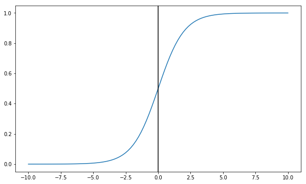
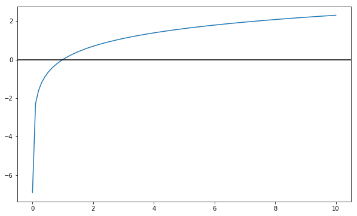
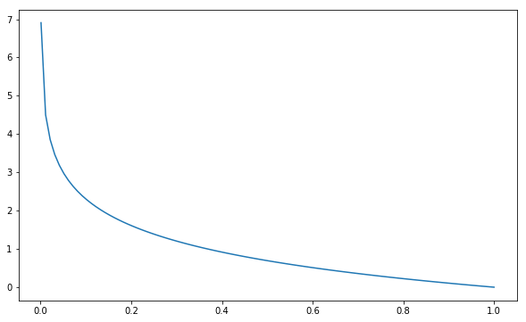
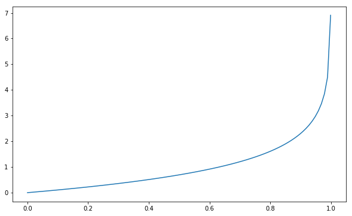

Logistic Regression Basics
Stated with variables
Our goal is to find predictions that accurately predict the actual values
We’ve got a bunch of input data
$x \in \mathbb{R}^{n}$
We’ve got our 0 or 1 target
$y$
Our predictions between 0 and 1
$\hat{y}$
We’ll arrive at our predictions using our weights
$w \in \mathbb{R}^{n}$
And our bias unit
$b \in \mathbb{R}$
Both of which will be a result of our computation
But we need to coerce our prediction values to be between 0 and 1, therefore we need a sigmoid function.
$\sigma(z) = \frac{1}{1+e^{-z}}$
%pylab inline
def sigmoid(z):
return 1/(1+np.exp(-z))Populating the interactive namespace from numpy and matplotlib
Because as you can see, the values tend to 0 for negative numbers, and 1 for positive numbers. Furthermore, the curve crosses x=0 at y=0.5.
X = np.linspace(-10, 10, 100)
fig, ax = plt.subplots(figsize=(10, 6))
ax.plot(X, sigmoid(X))
ax.axvline(0, color='k')<matplotlib.lines.Line2D at 0x8b6b7b8>

Cost Function
So our prediction vector is going to be a multiplication of the inputs $x_1, …, x_n$ by the weights $w_1, …, w_n$, plus a bias term $b$.
$\hat{y} = \sigma(w^{T}x + b) \quad \text{where} \quad \sigma(z) = \frac{1}{1+e^{-z}}$
Traditionally, we might consider some sort of cost function like squared error– the difference between observation and actual, squared.
$\mathcal{L}(\hat{y}, y) = \frac{1}{2}(\hat{y} - y)^{2}$
However, this leads to some very poorly-behaved curves. Instead, we use:
$\mathcal{L}(\hat{y}, y) = -\big(y\log\hat{y} + (1-y)\log(1-\hat{y})\big)$
Intution
Recall the shape of the log function:
- It’s basically negative infinity at
0 - It is exactly
0at1 - It scales (slowly) to positive infinity
fig, ax = plt.subplots(figsize=(10, 6))
X = np.linspace(0.001, 10, 100)
ax.plot(X, np.log(X))
ax.axhline(0, color='black')<matplotlib.lines.Line2D at 0x8f5ad68>

So looking back at this cost function and considering the behavior of log consider what happens in the following scenarios
If y=1
Our Loss Fucntion becomes
$\mathcal{L} = -\big( \log(\hat{y}) + 0\big)$
Therefore, if we predict 1, then log(1) evalues to 0– no error.
Conversely, if we predict 0, then we have basically infinite error. We don’t ever want to be certain that it’s a 0 when it’s actually not.
fig, ax = plt.subplots(figsize=(10, 6))
X = np.linspace(0.001, 1, 100)
ax.plot(X, -np.log(X))[<matplotlib.lines.Line2D at 0x8f344a8>]

If y=0
Our Loss Fucntion becomes
$\mathcal{L}(\hat{y}, y) = -\big(0 + (1)\log(1-\hat{y})\big)$
And looking at that last term, we see that as our prediction gets closer and closer to 1, the error becomes infinite.
fig, ax = plt.subplots(figsize=(10, 6))
X = np.linspace(0., .999, 100)
ax.plot(X, -np.log(1-X))[<matplotlib.lines.Line2D at 0x910c358>]

Cost Function
If this intuition makes sense at a record-level, then extrapolating this loss function to each of our records helps us arrive at our Cost Function, expressed as
$J(w, b) = \frac{1}{m} \sum_{i=1}^{m} \mathcal{L}(\hat{y}^{i}, y^{i})$
$J(w, b) = - \frac{1}{m} \sum_{i=1}^{m} \big(y^{i}\log\hat{y}^{i} + (1-y^{i})\log(1-\hat{y}^{i})\big)$